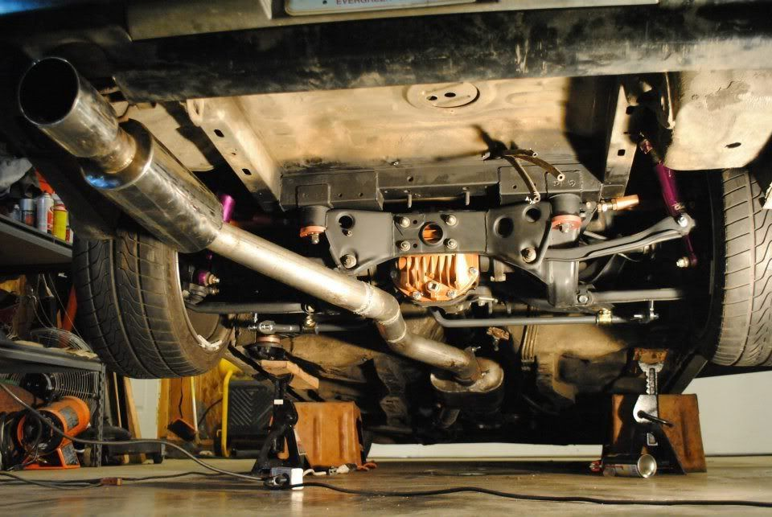

-
Re: S13/S14/S15 Subframe Conversion Kit GB-STANCE MULTILINK!
As you guys stated, I will make up some type of washer on the bottoms of the bushing. I'm not gonna hack all that welding up for to flip them.87T, My build thread http://z31performance.com/forum/z31-…lee-s-87t-rb26 -
Re: S13/S14/S15 Subframe Conversion Kit GB-STANCE MULTILINK!
Hack welding up? Did you weld your bushings in? You should just be able to drop the subframe, press the bushings out, press them back in the right way, and reinstall subframe.
-
Re: S13/S14/S15 Subframe Conversion Kit GB-STANCE MULTILINK!
Yeah, just flip the subframe upside down, heat the pipe section thing up a little, and carefully beat them out with a hammer.
Also…
 sigpic
sigpic -
Re: S13/S14/S15 Subframe Conversion Kit GB-STANCE MULTILINK!
^^^^Butter, agreed.
JFMil novecientos ochenta y cinco - Trescientos Zeta Equis TURBO -
Re: S13/S14/S15 Subframe Conversion Kit GB-STANCE MULTILINK!
Ok, I'll flip the bushings around, not sure when I'll get around to it, but I will post pics87T, My build thread http://z31performance.com/forum/z31-…lee-s-87t-rb26 -
Re: S13/S14/S15 Subframe Conversion Kit GB-STANCE MULTILINK!
It does lower the REAR of the frame a bit. It's still a little less than installing the old style bushing however. It only matters if you know what you want, and how to go about it (purposely vague). As you can see in the picture, I'm not in to compliance/deflection lol. Did it make a noticeable difference? I haven't slid it yet, but I'll know more after the 24th :yahoo . It drives great otherwise though (beside the expected "tracking" from an eyeball-alignment).Careless wrote: you made those super tough ramp/bracket things. then you boxed them in even more. then you put the stud on. then you put the c-bracket over the stud. doesn't that lower the subframe a lot? at what level does the stud "bar" have to be with the rest of the length of the frame that they get tacked to… or does it matter?
"…i think bov needs oil, its not closing fast enough so the car dies when you come off of boost…" -Automotive Genius -
Re: S13/S14/S15 Subframe Conversion Kit GB-STANCE MULTILINK!
Be ready for additional notching as well, now that you're bringing all the mounting points closer to the frame :barbareSpooledup300z wrote: Ok, I'll flip the bushings around, not sure when I'll get around to it, but I will post pics
"…i think bov needs oil, its not closing fast enough so the car dies when you come off of boost…" -Automotive Genius -
Re: S13/S14/S15 Subframe Conversion Kit GB-STANCE MULTILINK!
[quote]BSRJIRONMAN wrote:I know.... I just looked at it, I think I am going to make up some type of washer, 1/2" isn't that important to me, I not into all that extreme low, drift geometry stuff, just a hardcore street car, that likes to visit the drag strip on weekends.Originally posted by Spooledup300z
Here's a question, what stops the factory rubber rear subframe bushings from falling out?87T, My build thread http://z31performance.com/forum/z31-…lee-s-87t-rb26 -
Re: S13/S14/S15 Subframe Conversion Kit GB-STANCE MULTILINK!
nah I didnt weld the bushings in, I will have to cut more out of the notchesRB20ZR wrote: Hack welding up? Did you weld your bushings in? You should just be able to drop the subframe, press the bushings out, press them back in the right way, and reinstall subframe.87T, My build thread http://z31performance.com/forum/z31-…lee-s-87t-rb26 -
Re: S13/S14/S15 Subframe Conversion Kit GB-STANCE MULTILINK!
[quote]Spooledup300z wrote: [quote=BSRJIRONMAN]the "subframe stays" that bolt to the floor pan.Originally posted by Spooledup300z -
Re: S13/S14/S15 Subframe Conversion Kit GB-STANCE MULTILINK!
My subframe is still in mock up stage, will be adding a thick washer to the underside of the forward bushings to tie everything together. My fabricator has been building "hardcore street cars" and full race cars for years and is without a doubt qualified, I will however post a full write-up one everything has been completed.
Ps. Stay tuned ForzaMotorsport fans.......sigpic
NWN Moderator
FertilePower on XboxLive -
Re: S13/S14/S15 Subframe Conversion Kit GB-STANCE MULTILINK!
Why add a washer when you can just install it properly? Someone can claim qualified all they want, but if they put bushings like that in improperly, and maintain that they are correct, I would stop using their services immediately.1985 NA2T(now RB) * 1988 SS x2 * 1984 AE x3 * 2006 350Z

-
Re: S13/S14/S15 Subframe Conversion Kit GB-STANCE MULTILINK!
"properly" is up for debate, the z31 subframe has 3 attachment points all with far more movement than the s13'sOK85ZX wrote: Why add a washer when you can just install it properly? Someone can claim qualified all they want, but if they put bushings like that in improperly, and maintain that they are correct, I would stop using their services immediately.
and as the trailing arms attach near the outside mounts, the center mount acts as a pivot for the deflection, which means more stress… if the s13 subframe is adequately supported (ie. torqued down) each mount point will take less side load -
Re: S13/S14/S15 Subframe Conversion Kit GB-STANCE MULTILINK!
I'm not sure if installing these bushings incorrectly defines his installers skills. This is something that could easily happend ie: in my installation. IMO if a person makes a mistake it means that there doing things instead of collecting parts.OK85ZX wrote: Why add a washer when you can just install it properly? Someone can claim qualified all they want, but if they put bushings like that in improperly, and maintain that they are correct, I would stop using their services immediately.87T, My build thread http://z31performance.com/forum/z31-…lee-s-87t-rb26 -
Re: S13/S14/S15 Subframe Conversion Kit GB-STANCE MULTILINK!
That's why I said "if they maintain that they are correct", meaning it wasn't just a mistake during install. If a person makes a mistake and fixes it, that's great. If a person makes a mistake and it is brought to his attention, then he goes on to say that it is actually correct… he is either being willfully ignorant, or being deceitful to get out of doing the work to correct it. Either of the latter two options being someone to stay far away from. The way he introduced the installer to the conversation by stating his credentials led me to believe that he was insinuating the installer believes his installation is correct… which is why I said what I did. If the installer just made a mistake I see no reason for him to have brought his credentials into the conversation.1985 NA2T(now RB) * 1988 SS x2 * 1984 AE x3 * 2006 350Z

Copyright © 2006–. All rights reserved. Privacy Policy